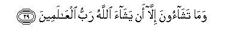

Sacred Texts Islam Index
Hypertext Qur'an Unicode Palmer Pickthall Yusuf Ali English Rodwell
Sūra LXXXI.: Takwīr, or the Folding Up. Index
Previous Next

The Holy Quran, tr. by Yusuf Ali, [1934], at sacred-texts.com
Sūra LXXXI.: Takwīr, or the Folding Up.
Section 1
1. When the sun
(With its spacious light)
Is folded up;
2. Wa-itha alnnujoomu inkadarat
2. When the stars
Fall, losing their lustre;
3. When the mountains vanish
(Like a mirage);
4. Wa-itha alAAisharu AAuttilat
4. When the she-camels,
Ten months with young,
Are left untended;
5. Wa-itha alwuhooshu hushirat
5. When the wild beasts
Are herded together
(In human habitations);
6. When the oceans
Boil over with a swell;
7. Wa-itha alnnufoosu zuwwijat
7. When the souls
Are sorted out,
(Being joined, like with like);
8. Wa-itha almawoodatu su-ilat
8. When the female (infant),
Buried alive, is questioned—
9. For what crime
She was killed;
10. Wa-itha alssuhufu nushirat
10. When the Scrolls
Are laid open;
11. When the World on High
Is unveiled;
12. Wa-itha aljaheemu suAAAAirat
12. When the Blazing Fire
Is kindled to fierce heat;
13. And when the Garden
Is brought near;—
14. AAalimat nafsun ma ahdarat
14. (Then) shall each soul know
What it has put forward.
15. So verily I call
To witness the Planets—
That recede,
16. Go straight, or hide;
17. And the Night
As it dissipates;
18. And the Dawn
As it breathes away
The darkness;—
19. Innahu laqawlu rasoolin kareemin
19. Verily this is the word
Of a most honourable Messenger,
20. Thee quwwatin AAinda thee alAAarshi makeenin
20. Endued with Power,
With rank before
The Lord of the Throne,
21. With authority there,
(And) faithful to his trust.
22. Wama sahibukum bimajnoonin
22. And (O people!)
Your Companion is not
One possessed;
23. Walaqad raahu bialofuqi almubeeni
23. And without doubt he saw him
In the clear horizon.
24. Wama huwa AAala alghaybi bidaneenin
24. Neither doth he withhold
Grudgingly a knowledge
Of the Unseen.
25. Wama huwa biqawli shaytanin rajeemin
25. Nor is it the word
Of an evil spirit accursed!
26. When whither go ye?
27. In huwa illa thikrun lilAAalameena
27. Verily this is no less
Than a Message
To (all) the Worlds:
28. Liman shaa minkum an yastaqeema
28. (With profit) to whoever
Among you wills
To go straight:

29. Wama tashaoona illa an yashaa Allahu rabbu alAAalameena
29. But ye shall not will
Except as God wills,—
The Cherisher of the Worlds.